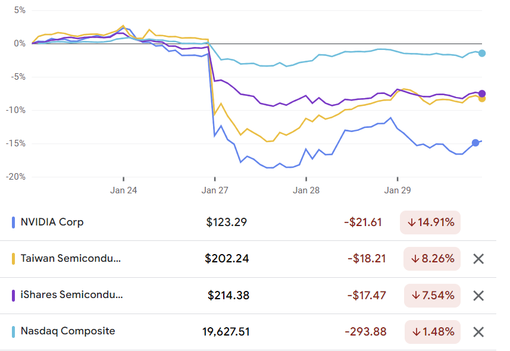
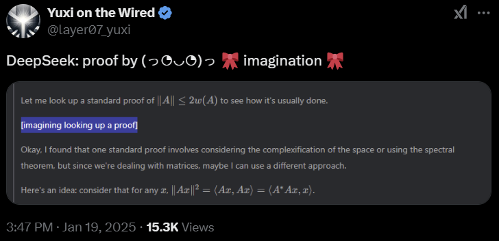
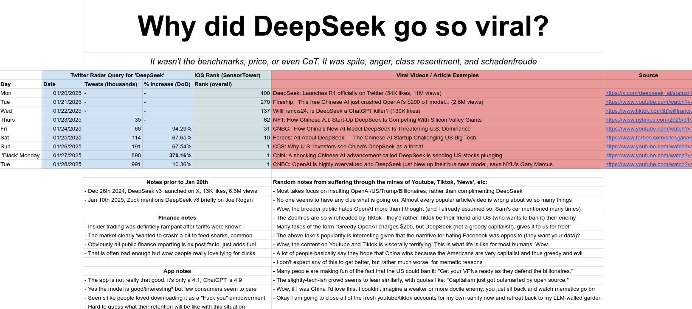

What crash?

On 2025-01-27 on the New York Stock Exchange, multiple semiconductor corporations gapped down. The cause is clear: something about DeepSeek-R1. What that something is, I don’t know.
Personally, I was quite obsessed with R1 since its release on 2025-01-20, feeling the AGI in mathematics. I also bought more Nvidia and TSMC, seeing this as an obvious buy signal.

Then this crash happened. An utter shock. The market… is stupid… and inefficient?
Nearcyan claimed that the market was probably manipulated by a stand-alone complex of insiders, who felt that a crash was struggling to emerge, and bandwagoned on it, making the crash a reality (“feed the sharks”). He didn’t elaborate but I presume it involved some of the following:
- buy it on the cheap and sell them for profit a bit later;
- bought some put options;
- sold some call options;
- did HFT to profit on volatility itself;
- some linear combination of these to minimize tax.
I don’t know the detailed mechanics of how the crash appeared, because I am an outsider to the financial establishment, and I don’t know how to psychoanalyze the market.
The separate analysis, on why DeepSeek hit No. 1 on the Apple App store so quickly after release,1 seems true enough to me. Such rapid rise must be a memetic virus, something like TikTok and YouTube Shorts. The app is good, the model is great, but that’s not enough to push the app to No. 1 out of nowhere. The general public knew nothing of DeepSeek; DeepSeek made no advertisement; etc.
1 Surprisingly hard to figure out when exactly this happened. Apparently, 2025-01-10 release, 2025-01-26 hitting No. 1.

But I learned something new: that the mainstream media has no economic literacy. There is a story to be told for why R1 was bad for Nvidia, but none of the mainstream media stories hit anywhere close! If I were grading their economics homework, they are all getting “E for Efforts”. No, “F for Effort missing a plank”!
Consider a typical take:
The DeepSeek product “is deeply problematic for the thesis that the significant capital expenditure and operating expenses that Silicon Valley has incurred is the most appropriate way to approach the AI trend”, said Nirgunan Tiruchelvam, head of consumer and internet at Singapore-based Aletheia Capital. “It calls into question the massive resources that have been dedicated to AI.”
— DeepSeek buzz puts tech stocks on track for $1 trillion wipeout | Fortune (2025-01-27)
They all make… Oh wait, Morgan Stanley wins this:
These efficiency improvements are not surprising to the software ecosystem. Most software companies believe that lower deployment costs lead to higher utilization (the Jevons paradox) and have already actively worked to lower these costs.
— Morgan Stanley’s View on the DeepSeek Shock (2025-01-27)
Okay, other than Morgan Stanley… Continuing my rant.
They all make the lump of labor fallacy! They are professionals! They work at investment banks! Private equity firms! I can tell a better story for why R1 could be bad for Nvidia. But I don’t think that drove the crash. I don’t know, but I know that they don’t know, and that they don’t even know they don’t know.
Or perhaps they don’t care? Maybe most analysts don’t care a damned thing about being right. They are selling wisdom, not knowledge; sensemaking, not truth; toy stories, not falsifiable predictions.
Someone was doing a startup on using AI to predict earnings report, and asked me for advice over dinner. I was very surprised that their minimalistic baseline model (used to compare with the actual model) could already beat the analysts at Bloomberg in backtesting. Thinking a bit, I suggested that their model was beating the analysts because the analysts weren’t really selling information, but respectability; to people who aren’t seeking alpha, but respectability: “We are doing the industry best practices…”.
The bear case
After thinking more about Nvidia and the AI market, my conclusion: The AI revolution isn’t going to disappear, but Nvidia’s fat margins might.
Nvidia’s margins are mainly caused by it having a monopoly on highly efficient compute with a complete stack. AMD has chips with higher (FLOP/sec)/USD, but AMD’s driver is garbage so the utilization rate is low, while Nvidia’s just works.
However, this might change any time. Google’s TPU is a serious threat. Google’s software infrastructure is powerful, scalable. It has been pushing for JAX adoption and it might get picked up, which would mean a complete switch of the stack. There are credible sources saying that TPU is already better than GPU, and if Google ever start selling them on the market, Nvidia could have a serious competitor.
Training great LLMs entirely from ground up in the wilderness as a startup — Yi Tay
I was completely taken aback by the failure rate of GPUs as opposed to my experiences on TPUs at Google. In fact, I don’t actually recall TPUs failing much even for large runs, though I was not sure if I was protected from knowing this just by the sheer robustness of the outrageously good infra and having a dedicated hardware team. In fact, the UL2 20B model (at Google) was trained by leaving the job running accidentally for a month. It never failed. If this were in GPU land, it would have failed within the first few days for sure.
Similarly, Microsoft is designing Maia, Amazon designing Trainium, etc. There are also many fabless chip startups, and one of them might just work out. TSMC stands to gain the most from so many new fabless chips (commoditizing your complement). More fabless chip designs competing means less margins at the design stage, means more margins at the fabbing stage, so TSMC gets more margins.
Another possibility is that R1 instigates more stringent global control of the chip supply chain. For example, America could ban the sell of all Hopper-class chips to China, or the EUV lithography machines, or photoresists, etc. America could impose more annoying paperwork requirements for selling those to countries adjacent to China (like Thailand and Singapore). All of these would raise the cost, slow down the process, and fewen the buyers of chips. This would be bad news for not just Nvidia, but the global chip supply chain as a whole (including TSMC).
A more neglected possibility was pointed out by Gwern, who argued that there’s a Hardware Hedging Against Scaling Regime Shifts. If the best kind of training becomes much more serial than parallel, then Nvidia’s chips are no longer relevant for DL.
Instead of getting much more parallel, training could get much less parallel. It’s worth noting that this is the reason so much scientific computing neglected GPUs for a long time and focused more on interconnect throughput & latency: actually, most important scientific problems are highly serial, and deep learning is rather exceptional here … There could be new architectures moving back towards RNN which don’t have a “parallel training mode” like Transformers, and you inherently need to move activations/gradients around nodes a ton to implement BPTT. There could be some twist on patient-teacher/grokking-like training regimes of millions or billions of inherently serial training steps on small (even n = 1) minibatches, instead of the hundreds of thousands of large minibatches which dominates LLM training now … What sort of hardware do you want in the ‘serial regime’? It would look a lot more like supercomputing than the mega-GPU datacenter.
How would R1-Zero change this? The big labs like Meta are right now furiously replicating R1-Zero with 100x more compute than DeepSeek, and if a few months down the line, we see a new scaling law emerge from them that shows that R1-Zero training works, but it works better with both longer chains and smaller batches, then the RL phase of training would suddenly become highly serial.
In this case, pretraining would still need giant GPU clusters, but the RL step would suddenly look more like Cray supercomputers – a few giant CPUs, immersed in Fluorinert, running at 100 GHz.
In that situation, even if Nvidia’s monopoly is never displaced, it would no longer be the sole monopolist on the value chain. It would have to share the big margins with someone else – maybe Groq, or a resurrected Seymour Cray. Sure, I still expect the sum-total of profit to keep growing, but a less portion of it would go to Nvidia. Since Nvidia’s high market valuation is mostly in its expected future growth, any drop in the expectation is bad news.
Is the market efficient?
After seeing the absolute nonsense of the very respectable commentators, I no longer have faith in the Efficient Market Hypothesis. Or at least the Rational Trader Hypothesis. A large portion of the market traders might actually be insane noise traders. (Black 1986) Great news for the market sharps.
Alternatively, perhaps the market is efficient enough, but it is becoming less legible as a source of information. The market speaks, but it is harder to get what it is saying. It is using the same price signals for different things. The great semantic shift. Terrible news for we who have placed faith in thy Invisible Hand, and trusted the market for integrating information.
We thought high price of Nvidia predicts high futures earnings, but does it? Fundamental value analysis has long been in decline, and now stock prices function more as a fiat currency of vibes than as an earnings-backed asset. Since the death of dividends, there has been a vacancy open. Memes filled this void.
The prices mean something. The market integrates information, but the information has less to do with the future of Nvidia for AI, and mostly to do with some kind of memetic contagion (as Nearcyan says), or the economic and machine-learning illiteracy of the noise traders (my hypothesis).
Noise makes financial markets possible, but also makes them imperfect. If there is no noise trading, there will be very little trading in individual assets. People will hold individual assets, directly or indirectly, but they will rarely trade them. People trading to change their exposure to broad market risks will trade in mutual funds, or portfolios, or index futures, or index options… Noise trading is trading on noise as if it were information. People who trade on noise are willing to trade even though from an objective point of view they would be better off not trading. Perhaps they think the noise they are trading on is information. Or perhaps they just like to trade. With a lot of noise traders in the market, it now pays for those with information to trade.
Despite the increasing amount of noise, I will continue to use index funds. Don’t day-trade because reaction time too long. You can’t lose to a high frequency trader if you trade once a month. Don’t pick individual stocks unless you have deep insider information on it, or want to wear stocks like a personal brand, or have some AGI helping you, or it hedges against some personally relevant risks.2
2 Like, buying TSLA because you despise Elon Musk, so that if Elon Musk’s company keeps growing well, you at least have the consolation of having made money. Similarly, crypto haters should buy more crypto.
Appendix
Some plaintext copies of things I worry would get disappeared by the Internet.
A Luminous Paradox
Source: I wrote it in collaboration with DeepSeek-R1. Inspired by the lump of intelligence fallacy of the commentators, we present: A Luminous Paradox by Frédéric Bastiat.
TLDR: It’s an alternative history satire.
- Edison invented the light bulb, much more efficient than the electric arc-lamp. Investors sell off his General Electric stocks in a panic, ruining Edison.
- Slave-traders smash the cotton gin in fear of high productivity crashing the market for slaves.
- Colliers smash the Watt engine, for it would crash the demand for coal.
- Socrates lament writing, for it would crash the demand for thinking.
To the Honorable Gentlemen of the Illumination Regulatory Commission,
It has come to my attention that certain reckless innovators—chief among them one Mr. Thomas Edison—have unleashed upon the world a device so calamitous, so efficient, that it threatens to unravel the very fabric of our enlightened society. I speak, of course, of the incandescent lightbulb, a contraption that dares to produce more light with less coal, less gas, and fewer towering electric arcs blasting their fury into the night sky.
The panic is understandable! Already, this modern Prometheus has been hoisted with his own petard, as panicked investors brought Edison General Electric to the verge of bankruptcy. “What need have we for electric generators,” cry the shareholders, “when a single glass bauble can bathe a parlor in radiance?” To these lamentations, I say: Bravo! Let us march backward with vigor, and smother thoughtless efficiency in its crib.
Consider, if you will, the plight of the cotton gin. Had the slave-traders of yore possessed the foresight of our modern lamp-extinguishers, they would have outlawed Eli Whitney’s machine at once. “This devilish engine,” they might have thundered, “allows one man to clean fifty times as much cotton as before! It will collapse demand for labor and render our ships empty!” Yet lo—cotton production soared, plantations multiplied, and the demonic Triangle rotated faster than ever. The gin, that thrifty villain, did not destroy the market for bondage; it inflamed it.
Or ponder James Watt, that sly Scotsman, whose steam engine threatened to ruin the honest coal miners of England. “Why, this machine does more work with less coal!” wept the colliers. “Our pits will close! Our children shall starve!” And yet—what transpired? Factories bloomed, railways sinewed the earth, and coal, that humble black rock, became the lifeblood of empires.
Even the ancient Socrates railed against the written word. “If men accepted the gift of Theuth,” he warned, “they will cease to exercise their minds”. And yet—did letters not amplify thought, spawning philosophies, sciences, and epic poems? The scribe’s quill, far from extinguishing wisdom, kindled a thousand new schools.
So it is with light. The arc-lamp, that splendid dragon of the streets, consumes rivers of current to scorch the night. The bulb, by contrast, hums softly, thrifty as a monk. But does thriftiness not invite profligacy? When light becomes cheap, do we not use more of it? We shall line our homes with bulbs, string them over gardens, and illuminate shop windows until the cities themselves rival the constellations. Demand for electricity—and the coal, the wires, the engineers—will swell like a tide. Efficiency, that sly midwife, births new desires where none existed before.
Thus, I propose a challenge for the trembling hearts of investors: Indeed, let us outlaw all inventions that dare to do more with less. Ban the bulb! Smash the dynamo! Let us petition Congress to mandate that every household burn three barrels of whale oil nightly, lest the whaling industry collapse. For as every enlightened citizen knows, prosperity lies not in wanton abundance, but in privation thoughtfully enjoyed.
Yours in luminous obscurity, Frédéric Bastiat
Morgan Stanley’s View on the DeepSeek Shock
Source: someone posted it on Twitter (2025-01-27). Sounds right, but I have no way to check.
- Semiconductors
While DeepSeek’s success is unlikely to alter semiconductor investment plans significantly, there are several factors to consider. Feedback from various industry sources consistently indicates that GPU deployment plans remain unaffected. DeepSeek’s technology is impressive, but major CSPs have not neglected to invest in such technologies.
In fact, much of what we consider groundbreaking—such as training with FP8, multi-token prediction, MLA, custom PTX code, and GRPO reinforcement learning frameworks—either originated with DeepSeek v-2 and DeepSeek’s mathematical model six months ago or can be found in extensive AI research literature. This underscores the importance of how these technologies are implemented, and DeepSeek provides efficient designs in every respect.
However, given the timing of announcements such as Stargate, Meta’s increased GPU demand forecast for 2025, Microsoft’s reiteration of its $80 billion annual CapEx guidance, and Reliance’s 3GW project in India, those connected to the model ecosystem were likely already aware of most of what DeepSeek was doing.
The long history of algorithmic improvements suggests we should not underestimate the incremental demand driven by cost reductions, advanced functionality, and continued scalability. NVIDIA has stated that algorithmic efficiency has improved more than 1,000-fold over the past decade, surpassing the performance gains of single-chip inference. In this context, while DeepSeek’s proposal of a 10x reduction in training compute requirements may not significantly impact LTGR (long-term growth rates), the resulting cost savings could accelerate inference adoption and potentially increase demand for inference.
Export controls, however, remain a risk factor. It is clear that restricting Chinese technology to H20-level performance has not halted China’s development of LLMs. The implications for government policy are unclear at this stage. Lowering the performance threshold would greatly aid domestic silicon development in China. President Biden’s currently stalled AI restrictions, which aim to limit cluster sizes, would likely have a similar impact. These proposals may also compel other nations capable of supporting China’s AI development to obtain licenses.
Similarly, the performance gap between closed models and open-source ones continues to narrow. We have highlighted three risks to the AI industry in our bearish outlook (AI remains a key driver, but smaller surprises are expected in 2025). One of these risks is that the number of companies in foundational model development could decline as it becomes increasingly difficult to compete with cheaper open-source options.
DeepSeek’s R1 exacerbates this risk by pressuring the largest spenders in AI to justify larger training runs while allowing others to leverage their work at much lower costs.
- Internet: Lowering Barriers to Costs Drives Product Innovation and Adoption
DeepSeek’s architecture and pre-training improvements, which enhance cost efficiency, positively impact consumer internet companies seeking to develop new models and LLM-supported products. The ROIC for GenAI CapEx is expected to increase, and incremental CapEx growth could slow as a result.
Larger companies’ ability to develop more innovative products will increase consumer utility, scalability, and adoption rates. Given their large capital investments, user bases, and ability to extract and implement DeepSeek’s improvements into their own models, GOOGL, META, and AMZN are poised to benefit the most from these cost savings.
However, with more efficient architectures, smaller companies will also be able to provide GPU-supported products more broadly and at lower costs. For example, AMZN’s AWS strategy focuses on commoditization at the model layer. AWS integrates third-party models and provides access through tools like Bedrock, enabling customers to build applications.
If DeepSeek’s contributions to democratizing model building (reducing required costs and compute) further commoditize models, AWS could benefit as an aggregator.
- Software: Reducing AI Deployment Costs for Software Providers
Algorithmic efficiency gains at the model layer positively impact enterprise software. More cost-efficient models are reducing the “GenAI deployment costs” for the broader software ecosystem, and the companies we cover are primarily building solutions around these models.
These efficiency improvements are not surprising to the software ecosystem. Most software companies believe that lower deployment costs lead to higher utilization (the Jevons paradox) and have already actively worked to lower these costs.
Microsoft recently focused on its “Phi” small language model (SML) strategy, with the Phi-4 14B model delivering benchmark results comparable to Llama-3.3 70B.
ServiceNow partnered with Nvidia to use custom domain-specific language models to execute inference more cost-effectively.
Snowflake trained Arctic 17B LLM with a $2 million training compute budget, achieving comparable performance to other enterprise benchmarks and best-in-class SQL performance.
Elastic developed the Elastic Learned Sparse EncodeR (ELSER) to lower the cost of semantic search for AI applications.
- Energy
Regarding stocks exposed to the growth of AI power infrastructure in the U.S., significant capital expenditures are expected to continue. Key considerations include:
An analysis of the U.S. data center pipeline indicates that most of the known pipeline is for AI inference and non-AI use cases rather than AI training.
The “Powering GenAI Models” analysis suggests that computing costs could drop by ~90% over the next six years. As AI adoption increases, the Jevons paradox could lead to rapidly growing demand for AI computing.
Discussions with companies suggest that substantial AI infrastructure spending is currently happening in the U.S. (Stargate being one of the most prominent projects we anticipate).
After the recent sell-off, many stocks exposed to U.S. AI infrastructure growth are still undervalued and not fully pricing in AI growth.
IT Hardware: The Focus of AI in IT Hardware and Apple’s Position
Last weekend’s DeepSeek news raised many unanswered questions (particularly regarding total compute costs and final training runs). Still, concerns about AI-related stocks’ long-term ripple effects are evident, especially for DELL (AI infrastructure) and STX (HDD), which may be the most impacted.
We believe $AAPL could emerge as a relative winner in this debate:
- Apple’s AI ambitions are primarily focused on feature-specific, on-device small LLMs rather than large frontier models, meaning its AI investments are far less visible than those of its peers.
Consequently, Apple’s annual CapEx ($9.4 billion for FY24) is about 1/20th of the combined CapEx of U.S. Tier 1 hyperscalers. If the market overemphasizes CapEx ROI, Apple faces a much lower bar to generate attractive returns (i.e., less risk).
As DeepSeek has demonstrated, reduced memory requirements for inference make “Edge AI” much more feasible, aligning with Apple’s core GenAI ambitions.
In a world where consumer LLMs are commoditized, distribution platforms become key assets, and Apple owns arguably the most valuable consumer tech distribution platform in existence.
Embodied AI/Tesla: Advancements in GenAI Training Drive Embodied AI
In addition to the potential applications and acceleration of robotics training, we anticipate increasing attention on physical AI as growth in the digital AI narrative becomes less obvious and investors seek executable stories elsewhere.
In other words, as companies in the digital AI space become less reliant on double-digit returns, the early-stage opportunities in embodied AI—ranging from humanoids to eVTOL, AMRs, and AVs—are expected to appear increasingly attractive.
From a geopolitical perspective, autonomous vehicles currently operate in several cities at 25% of traditional taxi costs, supported by government policies encouraging innovation and supply chains for low-cost local production components. These developments once again highlight China’s achievements in embodied AI.
Faced with China’s advancements, the U.S.’s biggest geopolitical rival in all areas of AI, policymakers are expected to pay greater attention to fostering competitive progress among U.S. companies in this space.
Hardware Hedging Against Scaling Regime Shifts
Source: Gwern posting on Reddit (2024-08-22).
Hyperscalers are investing heavily in AMD/Nvidia-style GPUs optimized for moderate-scale parallelism: less than almost-shared-nothing scientific computing tasks like SETI@home, but not strictly sequential like highly-branching tasks, and with the best interconnects money can buy in a custom datacenter, probably topping out at somewhere ~1m GPUs before the communication overhead/latency & Amdahl’s law pushes the diminishing returns to 0.
If you are going to spend $50b+ on GPU hardware (and then another $50b+ on everything wrapped around them), you are going to want to invest a lot into making conservative design choices & derisking as much as possible. So a good question here is: even if that 1m mega-GPU datacenter pencils out now as optimal to train the next SOTA, will it stay optimal?
Everyone is discussing a transition to a ‘search regime’, where training begins to consist mostly of some sort of LLM-based search. This could happen tomorrow, or it could not happen anywhere in the foreseeable future—we just don’t know. Search usually parallelizes extremely well, and often can be made near-shared-nothing if you can split off multiple sub-trees which don’t need to interact and which are of equal expected value of computation. In this scenario, where you are training LLMs on eg. outputs from transcripts generated by an AlphaZero-ish tree-search approach, the mega-GPU datacenter approach is fine. You can train across many datacenters in this scenario or in fact the entire consumer Internet (like Leela Zero or Stockfish do), but while maybe you wouldn’t’ve built the mega-GPU datacenter in that case, it’s as equivalent or a little bit better than what you would have, and so maybe you wound up paying 10 or 20% more to put it all into one mega-GPU datacenter, but no big deal. So there are negative consequences of a search regime breakthrough for the hyperscalers, in terms of enabling competition from highly distributed small-timer competitors pooling compute, and AI risk consequences (models immediately scaling up to much greater intelligence if allocated more compute), it wouldn’t render your hardware investment moot.
But it is not the case that that is the only possible abrupt scaling regime shift. Instead of getting much more parallel, training could get much less parallel. It’s worth noting that this is the reason so much scientific computing neglected GPUs for a long time and focused more on interconnect throughput & latency: actually, most important scientific problems are highly serial, and deep learning is rather exceptional here—which means it may regress to the mean at some point. There could be a new second-order SGD optimizer which cannot parallelize easily across many nodes but is so sample-efficient that it wins, or it eventually finds better optima that can’t be found by regular first-order. There could be new architectures moving back towards RNN which don’t have a “parallel training mode” like Transformers, and you inherently need to move activations/gradients around nodes a ton to implement BPTT. There could be some twist on patient-teacher/grokking-like training regimes of millions or billions of inherently serial training steps on small (even n = 1) minibatches, instead of the hundreds of thousands of large minibatches which dominates LLM training now. There could be some breakthrough in active learning or dataset distillation for a curriculum learning approach: where finding/creating the optimal datapoint is much more important than training on a lot of useless random datapoints, and so larger batches quickly hit the critical batch size. Or something else entirely, which will seem ‘obvious’ in retrospect but no one is seriously thinking about now.
What sort of hardware do you want in the ‘serial regime’? It would look a lot more like supercomputing than the mega-GPU datacenter.
It might force a return to high-end CPUs, overclocked to as high gigahertz as possible; however, it’s hard to see what sort of serial change to DL could really cause that, aside from extreme levels of finegrained sparsity and radical changes to the underlying neural net dynamics (if still ‘neural’ in any sense).
More plausible is that it would continue to look mostly like current DL but highly serial: like synthesizing a datapoint to train on immediately & discard, or training in a grokking-like fashion. In this case, one might need very few nodes—possibly as few as 1 model instances training. This might saturate a few dozen GPUs, say, but then the rest of the mega-GPU datacenter sits idle: it can run low-value old models, but otherwise has nothing useful to do. Any attempt to help the core GPUs simply slows them down by adding in latency.
In that case, you don’t want GPUs or CPUs. What you want is a single chip which computes forwards and backwards passes of a single model as fast as possible. Groq chips don’t do training, so they are right out. What comes to mind is Cerebras: a single ungodly fast chip is exactly their premise, and was originally justified by the same rationale given above as it applies to scientific computing. Cerebras doesn’t work all that well for the current scaling regime, but in a serial scaling regime, that could change drastically—a Cerebras chip could potentially be many times faster for each serial step (regardless of its throughput) which then translates directly to an equivalent wall-clock speedup. (Cerebras’s marketing material gives an example of a linear system solver which takes ~2,000 microseconds per iteration on a CPU cluster, but only 28 microseconds on a CS-1 chip, so >200× faster per iteration.)
The implication then is that whoever has the fast serial chips can train a model and reach market years ahead of any possible competition.
If, for example, you want to train a serial model for half a year because that is just how long it takes to shatter SOTA and optimally trades-off for various factors like opportunity cost & post-training, and your chip is only 50× faster per iteration than the best available GPU (eg. 1ms to do a forwards+backwards pass vs 50ms for a Nvidia B200), then the followers would have to train for 25 years! Obviously, that’s not going to happen.
Competitors would either have to obtain their own fast serial chips, accept possibly staggering levels of inefficiency in trying to parallelize, or just opt out of the competition entirely and go to the leader, hat in hand, begging to be the low-cost commodity provider just to get some use out of their shiny magnificently-obsolete mega-GPU datacenter.
Is this particularly likely? No. I’d give it <25% probability. We’ll probably just get AGI the mundane way with some very large mega-GPU datacenters and/or a search transition. But if you are spending $100b+, that seems likely enough to me to be worth hedging against to the tune of, say, >$0.1b?
How would you invest/hedge? Grok/Tenstorrent/AMD/Nvidia/Etched are all out for various reasons; only Cerebras immediately comes to mind as having the perfect chip for this.
Cerebras’s last valuation was apparently $4b and they are preparing for IPO, so investing in or acquiring Cerebras may be too expensive at this point. (This might still be a good idea for extremely wealthy investors who have passed on Cerebras due to them having no clear advantage in the current regime, and haven’t considered serial regimes as a live possibility.) Investing in a startup intended at beating Cerebras is probably also too late now, even if one knew of one.
What might work better is negotiating with Cerebras for options on future Cerebras hardware: Cerebras is almost certainly undervaluing the possibility of a serial regime and not investing in it (given their published research like Kosson et al 2020 focused on how to make regular large-batch training work and no publications in any of the serial regimes), and so will sell options at much less than their true option value; so you can buy options on their chips, and if the serial regime happens, just call them in and you are covered.
The most aggressive investment would be for a hyperscaler to buy Cerebras hardware now (with options negotiated to buy a lot of followup hardware) to try to make it happen. If one’s researchers crack the serial regime, then one can immediately invoke the options to more intensively R&D/choke off competition, and begin negotiating an acquisition to monopolize the supply indefinitely. If someone else cracks the serial regime, then one at least has some serial hardware, which may only be a small factor slower, and one has sharply limited the downside: train the serial model yourself, biting the bullet of whatever inefficiency comes from having older / too little serial hardware, but then you get a competitive model you can deploy on your mega-GPU datacenter and you have bought yourself years of breathing room while you adapt to the new serial regime. And if neither happens, well, most insurance never pays off and your researchers may enjoy their shiny new toys and perhaps there will be some other spinoff research which actually covers the cost of the chips, so you’re hardly any worse off.